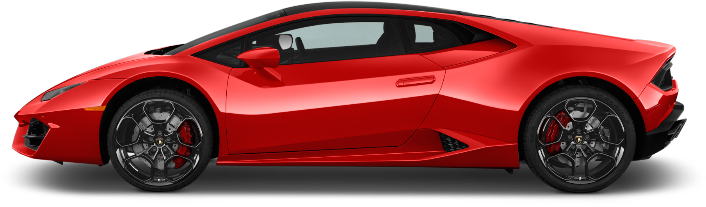

LAMBO
Audi took over Lamborghini in 1998.
Lamborghini was founded in 1963 by Ferruccio Lamborghini. He became rich building Tractors after the Second World War. He founded Lamborghini because he wanted to build a good touring car to compete against the cars of makers such as Ferrari. In 1963 he released a first prototype of his ideal sports car, the 350 GTV.
we are "fUTURE CAR"
Lamborghini 350 GT.
The Countach is one of the most famous Lamborghinis. It was also the one which was built for the longest time, 16 years, from 1974 till 1990. There were several different versions. They all had V12 engines with a power ranging from 260 to 355 kW. automatic climate control, premium leather materials, power seating, air filtration, power features, performance speakers, and LCD monitors. .
The Countach is one of the most famous Lamborghinis. It was also the one which was built for the longest time, 16 years, from 1974 till 1990. There were several different versions. They all had V12 engines with a power ranging from 260 to 355 kW. automatic climate control, premium leather materials, power seating, air filtration, power features, performance speakers, and LCD monitors.